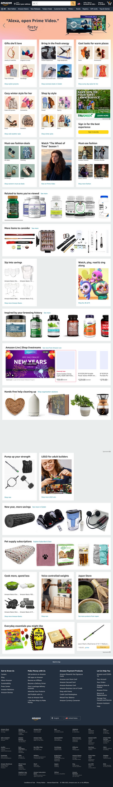

PARC: Contrast
Wes Bos
Wesbos.comContrast is designing a distinct difference between the colors of the foreground and background. Wes Bos's website does this very well. He primarily only uses three colors: white. black, and yellow. The white on black, black on white, and black on yellow provide some of the best contrast ratios.
White Space and Clean Design
BYU Pathway Worldwide
BYU Pathway WorldwideWhite space or as others call it negitive space is the area between elements on a website. It gives speration and keeps things from being to crowded The color does not have to be white. It can be any color. BYU Pathway's website makes great use of white space by keeping the design simple and clean feeling. There is nothing that is distracting on the site.
PARC: Proximity
Amazon
Amazon Proximity is used to show a relationship between items. Amazon uses proimity to group items that are in the same category.